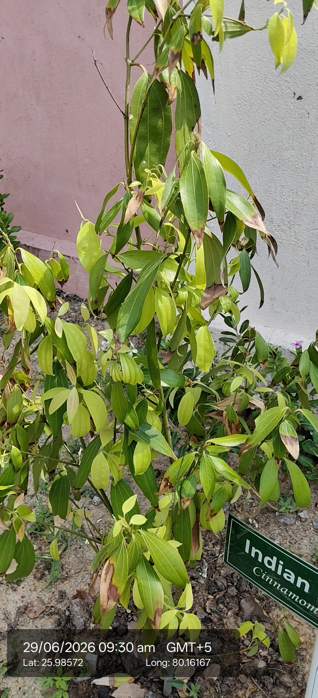

Visual record04 photographs



| Scientific name | Cinnamomum verum (true cinnamon) or Cinnamomum tamala (Indian bay leaf, closely related) |
|---|---|
| Family | Lauraceae |
| Type | Evergreen tree (not a herb or shrub). |
| Category | Trees |
Habitat & Growing Conditions
- Tropical climates; thrives in moist, well‑drained soils.
- Glossy elongated leaves, aromatic bark, small flowers.
Economic Importance
- Bark is dried and used as spice (cinnamon sticks/powder).
- Leaves sometimes used as flavoring (tejpatta in India).
- Rich in essential oils (cinnamaldehyde) giving aroma and taste.
- Used in traditional medicine for colds, digestion, and diabetes.
- Plays a role in Ayurveda as a warming spice.
- Important in perfume and cosmetic industries.
- Has antimicrobial and antioxidant properties.
- Cultivated as a cash crop in tropical regions.
- Used in religious rituals and offerings.
- Economically valuable worldwide as a spice and medicinal plant.
Medicinal Importance
Medicinal notes pending.